「全導体(ぜんどうたい)」は、半導体工学と電子回路のしくみを アニメーションで学べるオンライン教材集です。pn接合・ダイオード・MOSFET・CMOSインバータ・ オペアンプ（反転増幅/非反転増幅）・コンパレータ・半導体製造プロセスまで、全45本を収録しています。
各図解はスライダー・タブ・ボタンで操作できます。PCでもスマホでも動きます（アプリ不要・その場で動作）。 高専・大学・工業高校での授業の予習・復習、実験レポート作成時の確認にどうぞ。
半導体工学
キャリア・pn接合からMOSFET、製造プロセスまで。授業の週順に並んでいます。
キャリア（自由電子と正孔）
ドーピングとフェルミ準位
-
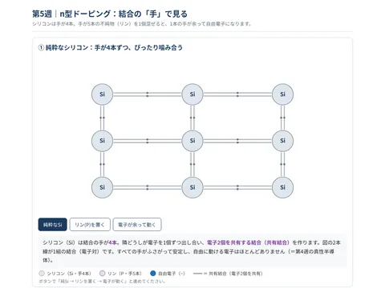
アニメ n型ドーピング（結合の手） -
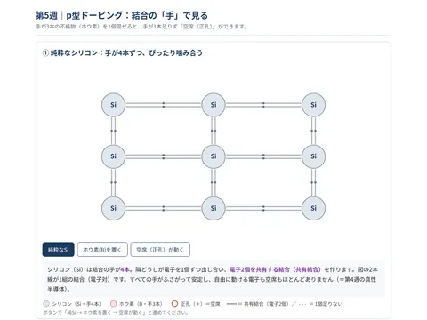
アニメ p型ドーピング（結合の手） -
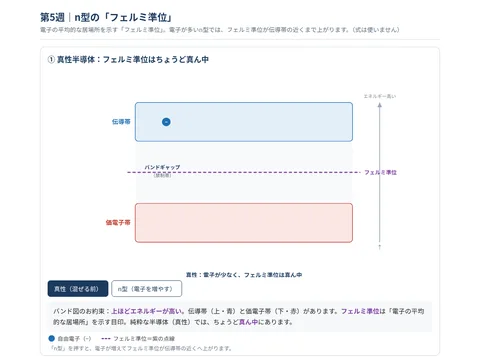
アニメ n型のバンド図とフェルミ準位 -
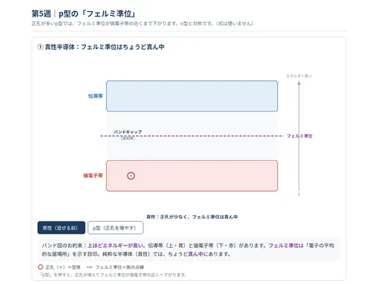
アニメ p型のバンド図とフェルミ準位
pn接合・ダイオード
-
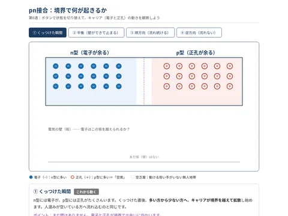
アニメ pn接合のしくみ（本編） -
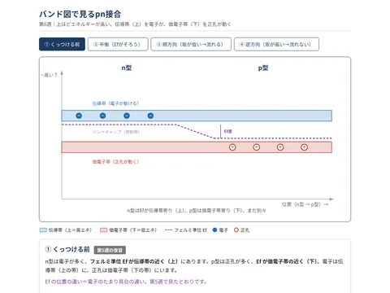
アニメ pn接合のバンド図 -
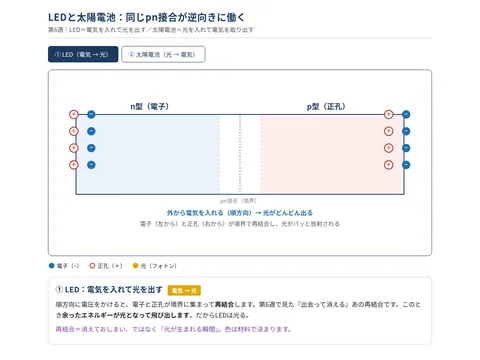
アニメ LEDと太陽電池 -
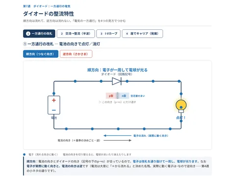
アニメ ダイオードの整流特性
MOSFET
-
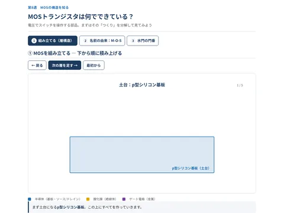
アニメ MOSの構造 -
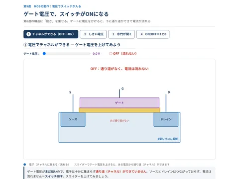
アニメ MOSの動作 -
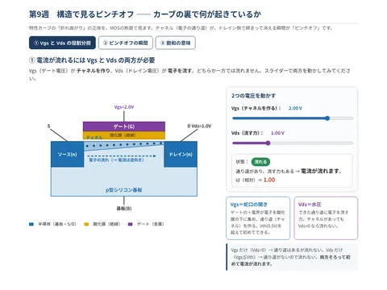
アニメ 構造とピンチオフ -
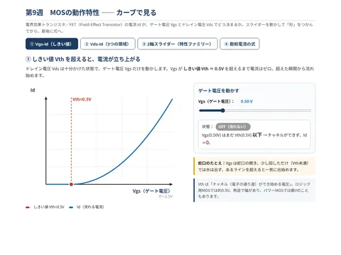
アニメ 特性カーブ -
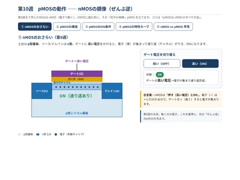
アニメ pMOSの動作 -
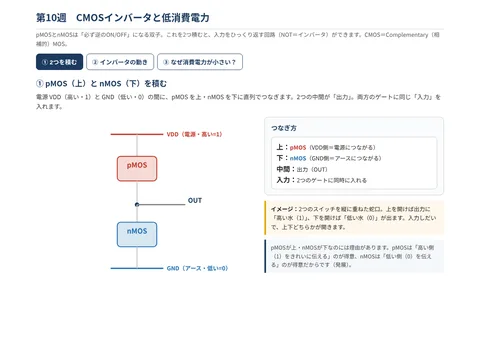
アニメ CMOSインバータと低消費電力 -
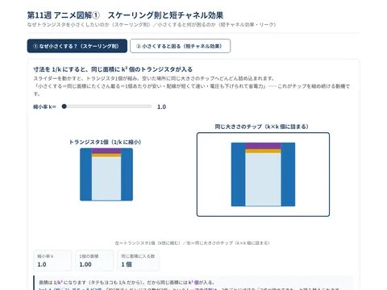
アニメ スケーリング則と短チャネル効果 -
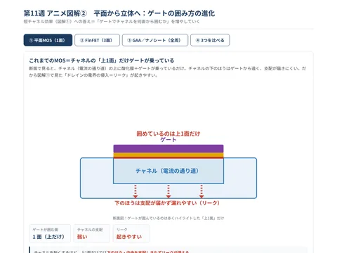
アニメ 平面から立体へ（FinFET・GAA）
半導体ができるまで（製造プロセス）
電子回路
MOSの実測からCMOS・OPアンプ・コンパレータまで。実験で使う回路がそのまま動きます。
MOSFETの特性
CMOSインバータ
OPアンプの基本
-
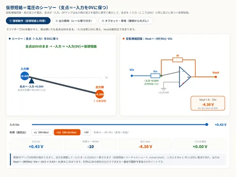
アニメ 仮想短絡（バーチャルショート） -
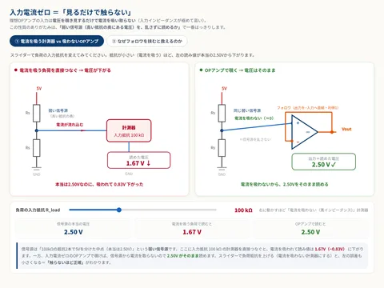
アニメ 入力電流ゼロ -
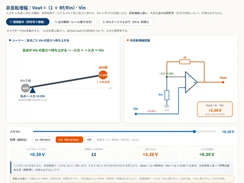
アニメ 非反転増幅 -
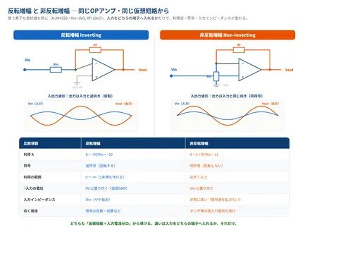
図解 反転 vs 非反転 -
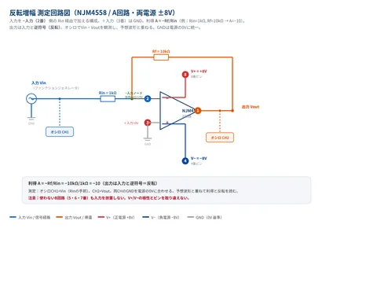
図解 反転増幅の測定回路 -
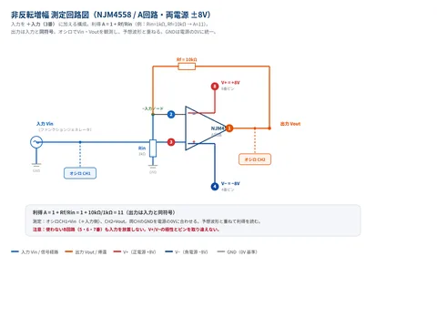
図解 非反転増幅の測定回路 -
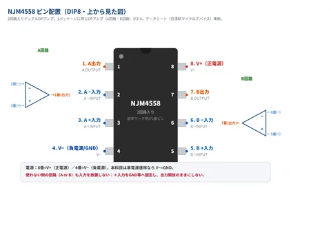
図解 NJM4558のピン配置